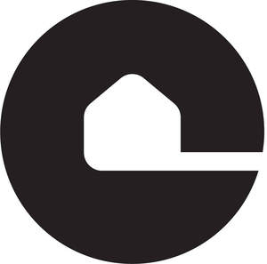
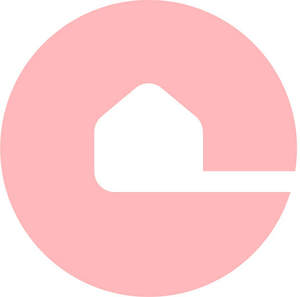

Trade Mark Journal No.2025/018 2 May 2025
UK00004188678 14 April 2025 (27,35,37)
Mark 1

Mark 2

Mark 3
Mark 4
Mark 5
- Class 27
- Carpets; Carpets, rugs and mats; Carpeting; Carpet underlays; Automobile carpets; Carpet backing; Carpet padding; Carpet inlays; Carpet runners; Carpet tiles; Vehicle mats and carpets; Floor coverings and artificial ground coverings; Floor coverings; Linoleum floor coverings; Materials for covering existing floors; Rugs (Floor -); Wall and ceiling coverings; parts, fittings or accessories for the aforesaid.
- Class 35
- Administration of loyalty rewards programs; Administration of the business affairs of franchises; Advertising services; Advertising; Advice in the running of establishments as franchises; Advisory services relating to publicity for franchisees; Assistance in business management within the framework of a franchise contract; Assistance in franchised commercial business management; Assistance in product commercialization, within the framework of a franchise contract; Business administration services; Business advertising services relating to franchising; Business advice and consultancy relating to franchising; Business advice relating to franchising; Business advisory services relating to franchising; Business advisory services relating to the establishment and operation of franchises; Business advisory services; Business assistance relating to franchising; Business assistance relating to the establishment of franchises; Business consultancy in relation to franchising; Business consultancy services; Business management advisory services relating to franchising; Business management assistance in the field of franchising; Business management; Dissemination of advertisements; Dissemination of advertising matter online; Dissemination of business information; Dissemination of commercial information; Electronic order processing; Management advisory services related to franchising; Marketing services; Office functions; Online advertisements; Online advertising on a computer network; Online ordering services; Ordering services for third parties; Procurement of goods on behalf of other businesses; Promoting the goods and services of others by means of a loyalty rewards card scheme; Providing assistance in the field of business management within the framework of a franchise contract; Providing assistance in the field of product commercialization within the framework of a franchise contract; Providing assistance in the management of franchised businesses; Provision of business advice relating to franchising; Provision of business information relating to franchising; Public relations services; Publicity services; Services rendered by a franchisor, namely, assistance in the running or management of industrial or commercial enterprises; Shop retail services connected with carpets; Retail services in relation to floor coverings; Wholesale services in relation to floor coverings; Retail services, wholesale services, mail order services or internet retailing services in relation to carpet glue, stain-preventative chemicals for use on carpets, adhesives for floor coverings, carpet cleaning preparations, carpet freshening preparations, carpet shampoo, deodorizing preparations for carpets, carpet beaters (electric -), carpet brushing machines, carpet cleaning machines, carpet washing machines, industrial carpet cleaning machines, carpet knives, carpet and flooring staple removers [hand tools], carpet seam tape, hardwood flooring, laminate flooring, parquet flooring, tile flooring, not of metal, tile floorings, not of metal, wood flooring, flooring materials (non-metallic -), flooring underlays, carpet beaters [hand instruments], carpet rakes, carpet sweepers, carpet yarns, carpets, carpets, rugs and mats, carpeting, carpet underlays, automobile carpets, carpet backing, carpet padding, carpet inlays, carpet runners, carpet tiles, vehicle mats and carpets, floor coverings and artificial ground coverings, floor coverings, linoleum floor coverings, materials for covering existing floors, rugs (floor -), furniture, paints, artwork, flooring, carpet, tiling, blankets, textile goods, household or kitchen utensils and containers, machines for household use and candles, furniture, wallpaper, floor coverings, paintings, artwork, works of art, glassware, porcelain, earthenware, paints, lighting equipment, textiles, clothing, cosmetics and perfumes, cleaning products, hand implements and cutlery, printed matter and stationery, bags, wallets, luggage tags, luggage and carrying cases, paints, industrial oils and greases, candles and wicks for lighting, candles, wax candles, gel candles, soya wax candle, wicks, candle wicks, wick pins, wax, candle wax, soya wax, gel for candle-making, fragranced candles, tallow, tapers, wax melts, glitter for candles, coloured wax chips, apparatus for lighting, heating, steam generating, cooking, refrigerating, drying, ventilating, water supply and sanitary purposes, design drawings relating to architecture, building and interior design, printed matter, publications, magazines, newsletters and periodicals, books, brochures and pamphlets, printed forms, promotional material, vouchers, cards for use in connection with sales and promotional incentive schemes and promotional services, instructional and teaching materials, pens, pen cases, pencils, pencil cases, calendars, tickets, luggage labels, paper, cards, postcards, printed matter, stationery, writing paper, envelopes, note pads, writing instruments, pens, pencils, directories, menus, and serviettes, paper, cardboard, book binding material, photographs, stationery, adhesives for stationery or household purposes, artists' materials, paint brushes, typewriters, packaging materials, leather and imitations of leather, animal skins, hides, trunks and travelling bags, luggage, handbags, rucksacks, purses, umbrellas, parasols and walking sticks, whips, harness and saddler, luggage tags, furniture, furniture for home, for the office or for commercial premises, mirrors, picture frames, cupboards, shelves, cabinets, tables, chairs, wardrobes, glassware, knives, forks, spoons, cutlery, garden furniture, pillows and cushions, sofas, settee, armchairs, tables, bedside tables, chairs, hooks for bathrobes and for clothing, antique furniture, bathroom furniture, bedroom furniture, dining room furniture, dining furniture, cabinets, chairs, coat racks, cupboards, desks, door furniture, doors, dressers, drawers, furniture for the home, storage furniture, tables, textile covers for furniture, wine racks, wooden furniture, curtain tie backs, magazine racks, wall plaques, sleeping bags, flower baskets, holders, tubs and stands, stools, plate racks, coat stands, doorstops, hampers, bean bags, handbag mirrors being of precious metal or coated therewith, household or kitchen utensils and containers, combs and sponges, brushes, brush-making materials, articles for cleaning purposes, steelwool, unworked or semi-worked glass (except glass used in building), glassware, porcelain and earthenware, textiles and textile goods, bed and table covers, travellers' rugs, textiles for making articles of clothing, duvets, covers for pillows, cushions or duvets, bedding, fabrics, cushion covers, bed and table covers, household textile articles, bed linen, duvets, duvet covers, quilts, quilt covers, pillowcases, towels, face cloths and bath linen, furnishing fabrics and materials, curtains, curtain fabric, fabric on rolls, drapes, blinds, valances and soft furnishings, table linen, carpets, rugs, mats and matting, linoleum and other materials for covering existing floors, wall hangings (non-textile), wallpaper, lace and embroidery, ribbons and braid, buttons, hooks and eyes, pins and needles, artificial flowers, carpets, rugs, mats and matting, linoleum and other materials for covering existing floors, wall hangings (non-textile), building materials, wall panelling, wall coverings, materials for wall panelling, materials for wall coverings, beading, edging, scotia, decorative mouldings, mouldings, parts, fittings or accessories for the aforesaid; Information, advice or consultancy services relating to the aforesaid.
- Class 37
- Carpet and rug cleaning; Carpet cleaning; Carpet deodorizing; Carpet-fitting; Fitting of carpets; Installation of carpets; Lease of carpet cleaning machines; Laying of carpet; Providing information relating to the cleaning of carpets and rugs; Provision of computerised information relating to the maintenance of carpets; Rental of carpet stretchers; Repair of carpets; Stain removal from carpets; Fitting of artificial wood flooring; Fitting of laminate flooring; Fitting of wood flooring; Cleaning of floor coverings; Fitting of floor coverings; Information, advice or consultancy services relating to the aforesaid.
COSY CARPETS & COMFY BEDS LIMITED
Representative: Brand Protect Limited